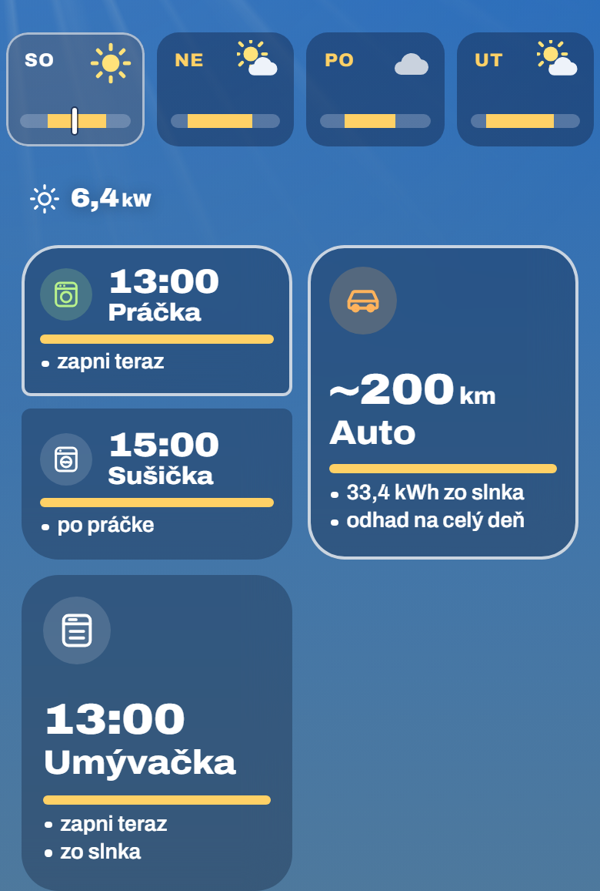
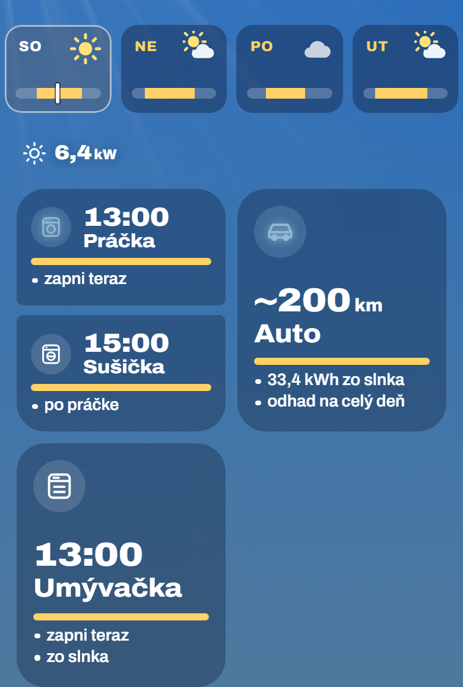
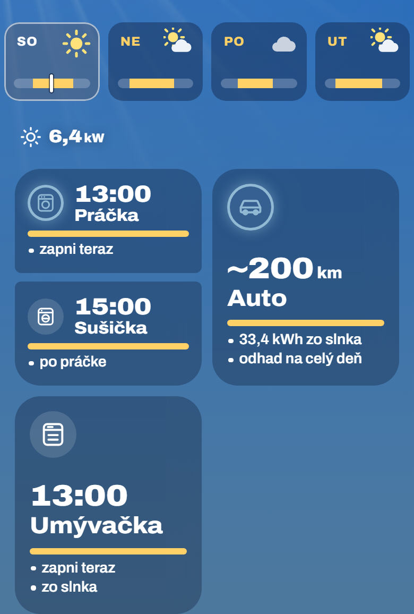
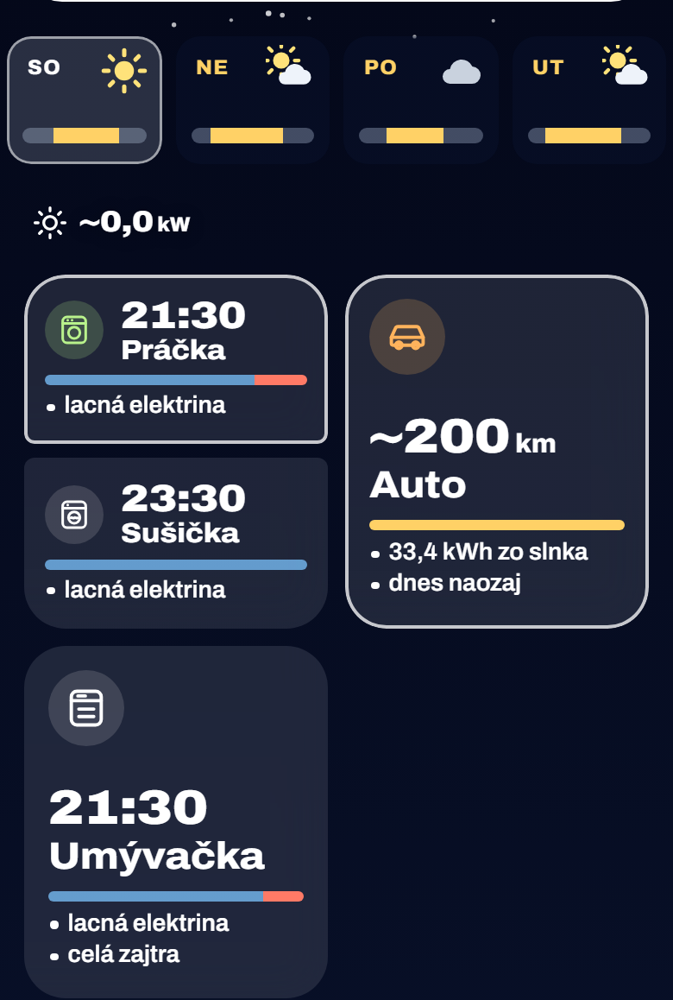
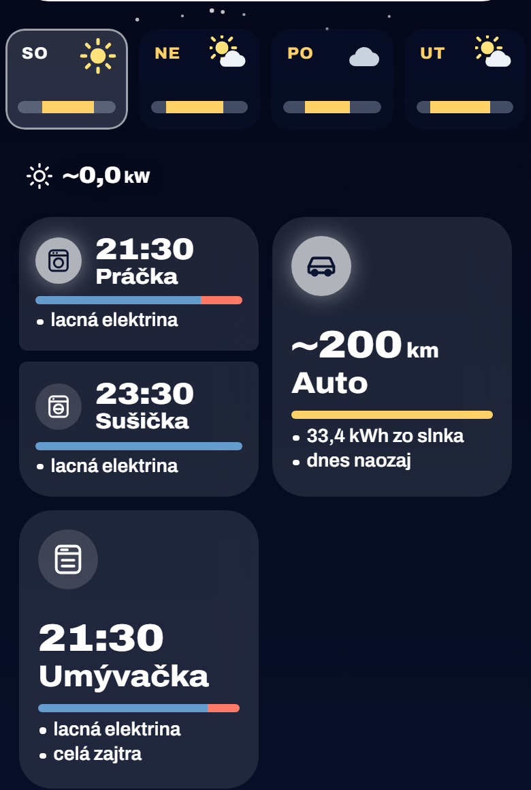
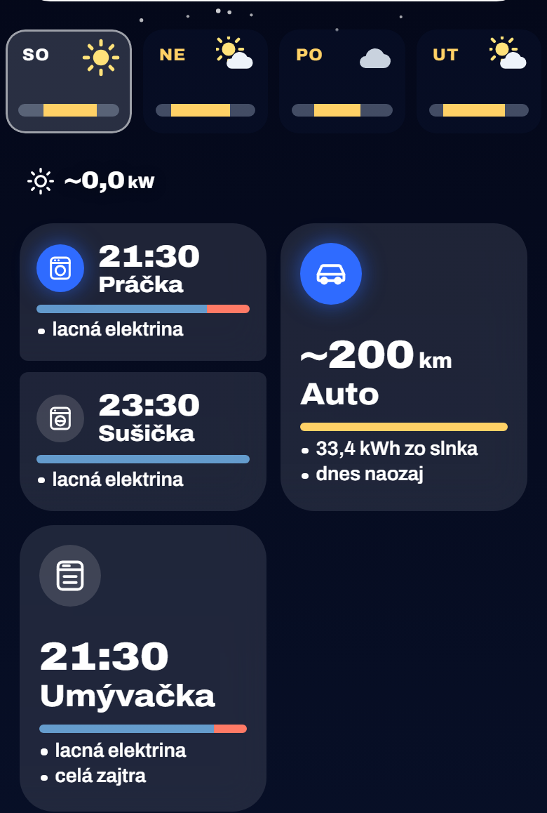

Zapnutý spotrebič len ikonou
Piate kolo (25. 11. 2026). Zapnutie povie len kruh s ikonou, dlaždica je bez obrysu, deň v páse 4 dní bez zmeny.
Namiesto zelenej a oranžovej je farba, ktorá ladí so živou oblohou: tá istá, akou svieti ikona aktívnej karty v
navigácii (--s4, appka ju počíta zo spodku oblohy). Cez deň je modrastá, v noci sivostrieborná, pri západe
slnka teplejšia. Platí pre všetky spotrebiče aj auto. I4 je navyše stály plný modrý kruh.
Obrázky sú snímky skutočnej appky so štýlom variantu; práčku som označil ako bežiacu a auto ako nabíjané len na ukážku (v testovacích dátach nebeží nič). Súmrak ani zamračenú oblohu som nesnímal – fixtures majú len jasný deň.
Cez deň





V noci





Porovnanie
- Najjemnejšie, celkom splynie s oblohou.
- Tenká svetlá čiara sa od bielej vypnutej ikony takmer nelíši – na prvý pohľad slabé.
- Zreteľné cez deň aj v noci: svetlý plný kruh proti priesvitným kruhom vypnutých.
- Ladí s navigáciou – aktívna karta a zapnutý spotrebič „svietia“ rovnako.
- V noci je farba sivostrieborná, menej „živá“ ako cez deň.
- Ako LED krúžok okolo vypínača, ľahké.
- Slabšie ako I2; na kraji kruhu sa bije so značkou ruka / slnko pri bojleri.
- Najvýraznejšie a vždy rovnaké – cez deň, v noci aj pri západe.
- Modrá v appke znamená lacnú sieť (pásik); modrý kruh nad modrým pásikom môže mýliť.
- S oblohou neladí, pri západe slnka bude jediná studená farba v karte.
Spoločné pre všetky: auto sa už nelíši od spotrebičov (oranžová bola „asi“). Texty v paneli Auto ostávajú s „asi“, takže odhad je povedaný slovami.
Rozhodnuté 25. 11. 2026: I2 · plný kruh vo farbe oblohy. Je jasný na prvý pohľad a ladí s oblohou aj s navigáciou.